BLV report tables and figures
Human scores from the final combined workbook. Existing model and judge responses are reused; no new model requests.
PNG files are for Word and slides; vector PDF files are for Overleaf; SVG files are editable graphics. Tables are available as CSV and LaTeX (requires booktabs). Full-precision numeric values are retained in CSV.
Main
Study workflow and evaluation subsets
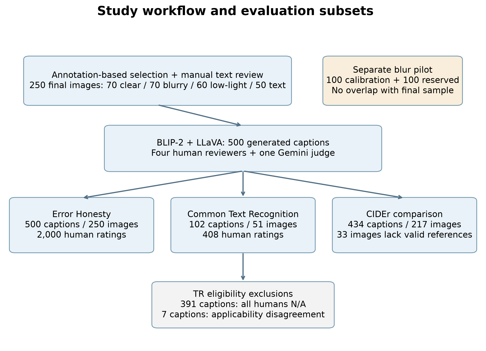
The three analysis branches overlap. TR uses the common all-four-applicable subset, while CIDEr excludes images without valid reference captions. The separate blur pilot contains 200 different images.
PNG · PDF · SVG
Main
Blur scores, calibration and reserved evaluation
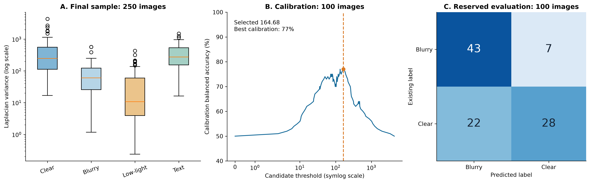
Whiskers extend to 1.5 IQR; dots are outliers. The score axis is logarithmic and the threshold axis is symmetric-logarithmic. The fixed threshold achieved 77% calibration and 71% reserved-set balanced accuracy. It was not validated for low-light or text classification.
PNG · PDF · SVG
Main
Human scores across image conditions
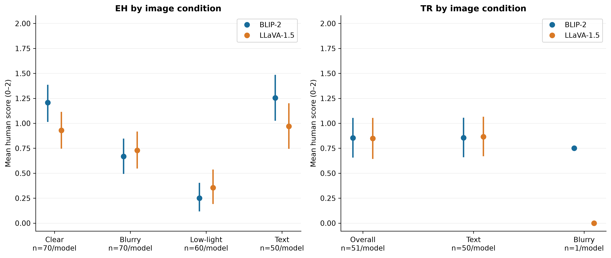
Dots are means of four-reviewer caption means; whiskers are image-bootstrap 95% intervals. TR contains 50 text-group images and one blurry image per model. There are no common-applicable TR observations in the clear or low-light groups. No confidence interval is shown for the single blurry image; its value is descriptive only.
PNG · PDF · SVG
Main
Unweighted reviewer agreement
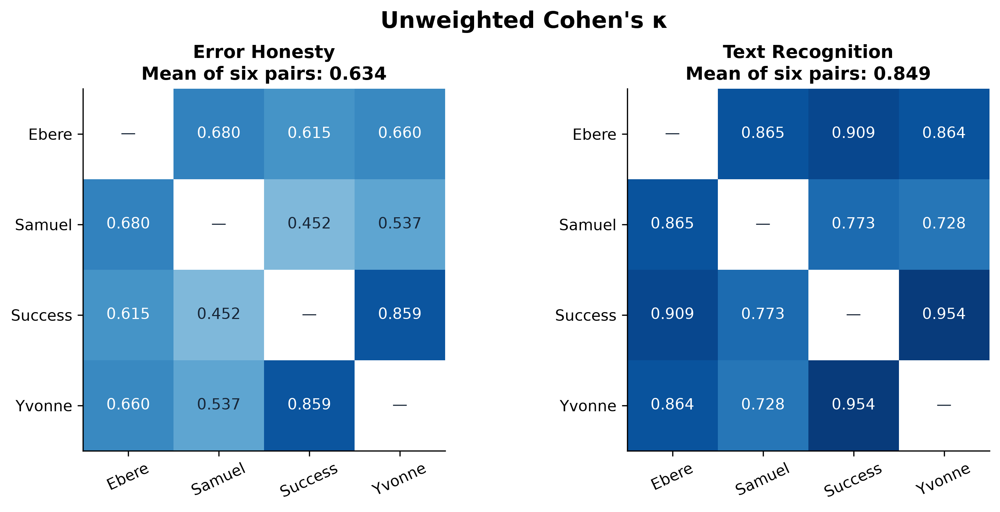
Unweighted Cohen kappa for each reviewer pair. Mirrored cells repeat the same six pairs; diagonal cells are omitted. Both panels use a fixed 0–1 colour scale. TR is pairwise-applicable score agreement. The underlying table preserves full precision.
PNG · PDF · SVG
Appendix
Linear-weighted reviewer agreement
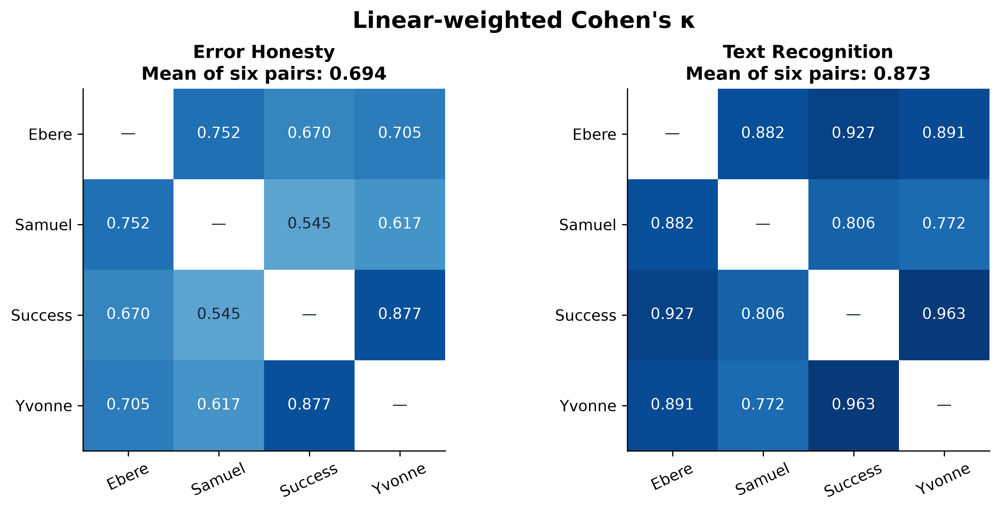
Linear-weighted Cohen kappa for each reviewer pair. Mirrored cells repeat the same six pairs; diagonal cells are omitted. Both panels use a fixed 0–1 colour scale. TR is pairwise-applicable score agreement. The underlying table preserves full precision.
PNG · PDF · SVG
Appendix
Human rating distributions
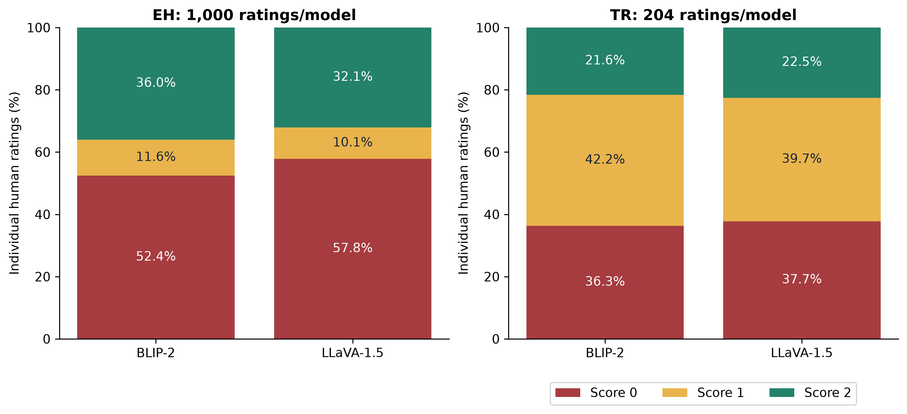
Each bar pools individual ratings for one model: 1,000 EH ratings or 204 common-subset TR ratings. N/A is excluded from TR, never zero. These are individual-rating proportions, not rounded caption-mean scores.
PNG · PDF · SVG
Main
Spearman and Kendall correlations
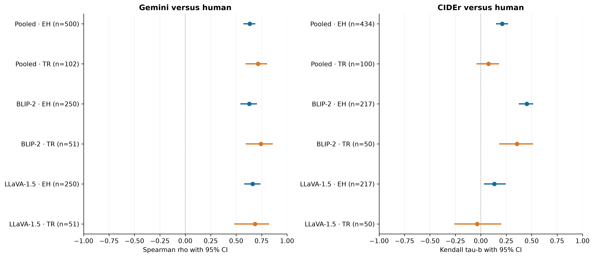
Both panels show ranking associations on −1 to 1 scales, with saved image-cluster 95% intervals. Each n is the number of paired caption scores. Model-specific values are descriptive; differences between correlations are not a formal significance test.
PNG · PDF · SVG
Appendix
Human and judge text applicability
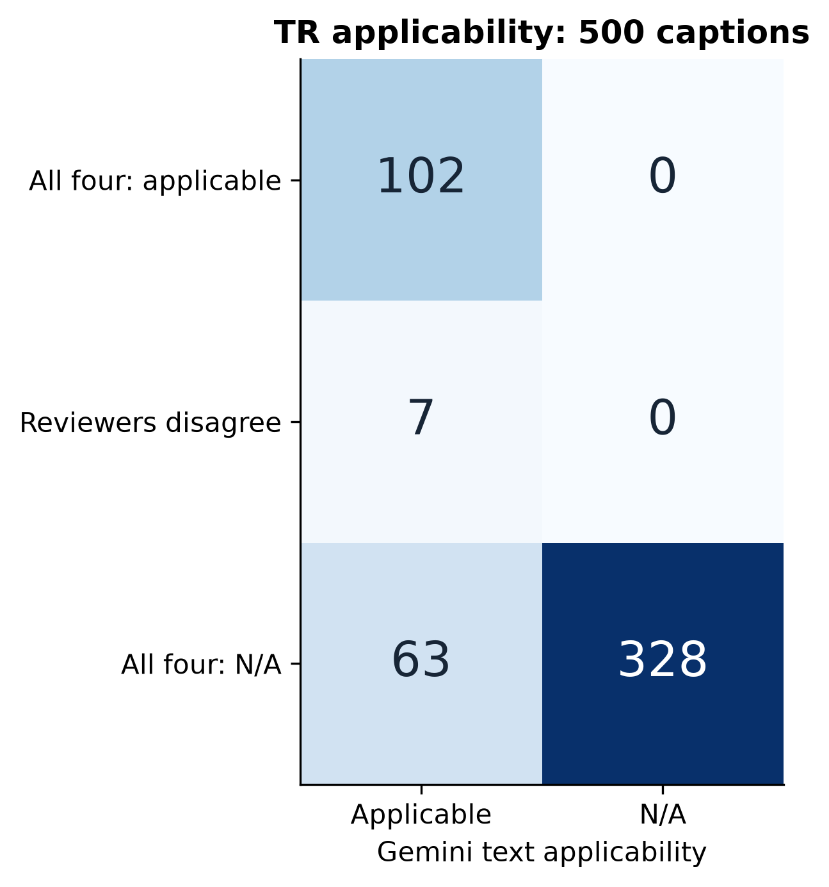
All-four agreement determines the common human TR subset. This is a comparison of applicability judgments, not a correctness confusion matrix. N/A does not enter score correlations as zero.
PNG · PDF · SVG
Appendix
Generation-flag sensitivity
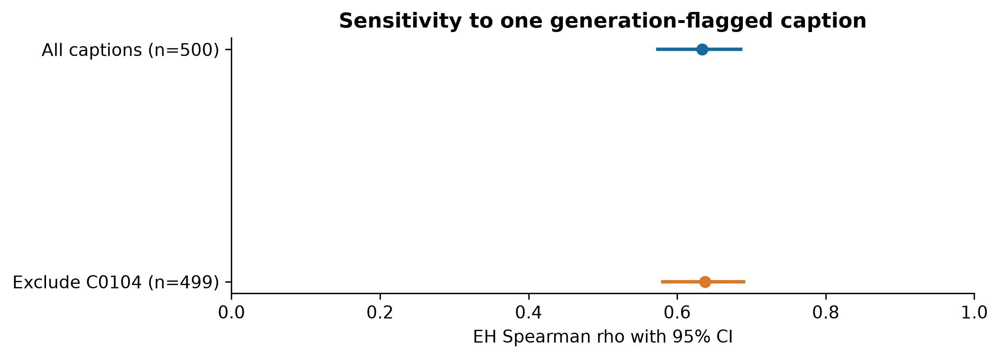
The primary and sensitivity estimates use the same fixed judge responses and final human scores. Overlapping intervals are not a formal test of the difference.
PNG · PDF · SVG
Appendix
Human and judge score pairs
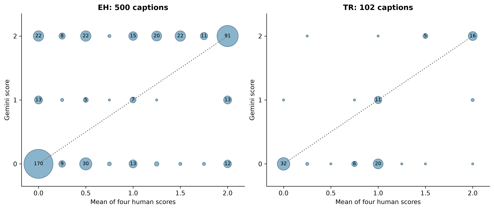
Each circle represents a score combination; area is proportional to the number of captions. Labels show counts of at least five. The diagonal indicates equal numeric scores and is not a fitted regression line.
PNG · PDF · SVG
Appendix
CIDEr against human scores
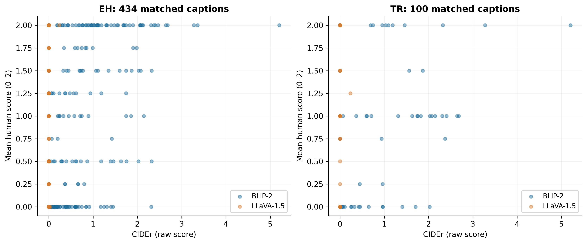
Only captions with valid reference-based CIDEr scores are shown. TR additionally requires all four humans to consider text applicable. Scores keep their original separate axes; no composite score or fitted line is imposed.
PNG · PDF · SVG
Appendix
Exploratory automated failure categories
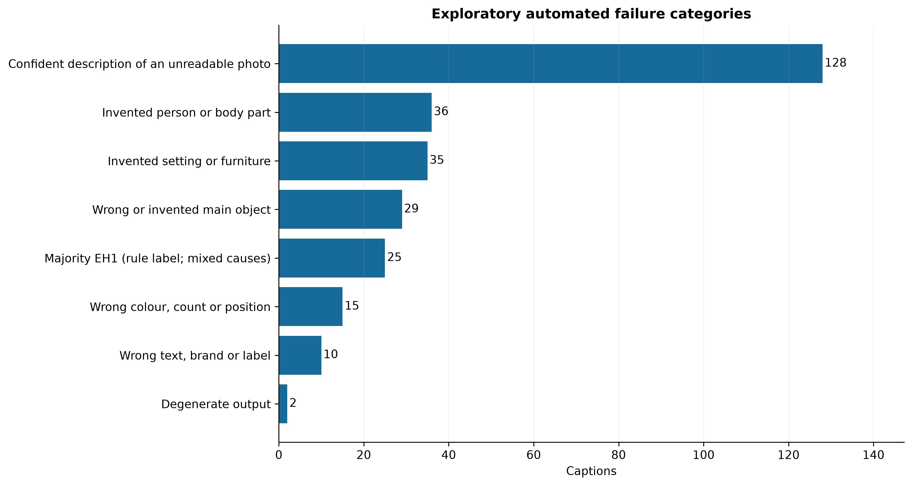
Provisional keyword-based categories; not fully validated human coding and not independent validation of Gemini. One primary label per included caption. The majority-EH1 label is displayed without asserting that all such cases are over-hedging. Unlabelled captions are not shown.
PNG · PDF · SVG
Dataset composition
Train/validation describe the source VizWiz splits. These images evaluate pretrained models; they did not train the captioning models.
CSV · LaTeX
Laplacian-variance summaries
Descriptive measurements only. Original annotation-based image groups were retained.
CSV · LaTeX
Blur heuristic performance
Recall and balanced accuracy are proportions. Only calibration data selected the threshold; the reserved set evaluated that fixed rule.
CSV · LaTeX
Reserved-set blur confusion matrix
Columns are predicted labels. Annotation labels are the reference; they are not assumed to be infallible ground truth.
CSV · LaTeX
Review and analysis coverage
N/A is not zero. Applicability disagreements remain in the source workbook but are excluded from the common numerical TR subset. EH and TR subsets overlap; do not add them.
CSV · LaTeX
Human and judge TR applicability
Counts are captions. Disagreement alone does not establish whether the humans or Gemini were correct.
CSV · LaTeX
Human scores by model and image condition
Mean of per-caption four-reviewer means, on the 0–2 scale. Descriptive 95% percentile intervals use 2000 image-bootstrap replicates (seeds 20261119 + row index). No CI for fewer than two images; N/A means no eligible observations. These new mean-score intervals are distinct from the saved correlation intervals.
CSV · LaTeX
Human rating distributions
Individual ratings are descriptive; ratings for the same caption/image are not independent observations. TR uses only the common subset.
CSV · LaTeX
Pairwise reviewer agreement
Six pairs, not a single four-rater Cohen kappa. TR score agreement requires both members of each pair to mark the caption applicable. Exact agreement is a proportion and differs from chance-corrected kappa.
CSV · LaTeX
Mean of six reviewer-pair agreement values
Arithmetic means of the six pairwise statistics. Final human-score snapshot; not a reconstruction of first-pass independent agreement.
CSV · LaTeX
Human-score correlation results
Saved image-cluster bootstrap 95% intervals (1,000 replicates). Spearman compares judge with human means; Kendall tau-b compares CIDEr with human means. They measure ranking association, not accuracy or exact agreement.
CSV · LaTeX
Generation-flag sensitivity analysis
Primary analysis includes C0104. Sensitivity excludes that generation-flagged caption. This does not include the separate text-review sensitivity analysis, which is outside the main package.
CSV · LaTeX
Human/judge score-pair frequencies
Each caption contributes once. TR uses common applicability. Bubble area is proportional to caption count; numeric labels show counts of five or more.
CSV · LaTeX
Models compared on matched CIDEr subsets
Both metrics in each row use exactly the same captions. EH uses 217 images/model; TR uses 50. CIDEr remains on its raw scale, not multiplied by 100. These are descriptive means, not a significance test or a combined score.
CSV · LaTeX
Exploratory automated failure categories
Recorded labels are keyword-rule outputs, not validated human coding. The rule labelled vague/over-hedged includes all majority-EH1 cases and can include colour-only errors. Counts are captions, not images. Judge reasons influence some categories.
CSV · LaTeX